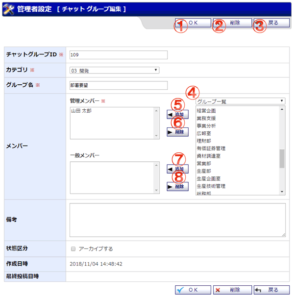

チャットグループの編集を行うことができます。

機能説明
ＯＫボタンチャットグループ登録確認画面へ遷移します。 |
削除ボタンチャットグループ削除確認画面へ遷移します。 |
|---|---|
戻るボタン遷移元の画面へ遷移します。 |
グループコンボ選択したグループに所属するユーザ又はグループが一覧に表示されます（既に選択済みのユーザは表示されません）。 |
管理メンバー追加ボタン一覧で選択されているユーザ又はグループを、管理メンバーに追加します。 |
管理メンバー削除ボタン管理メンバーで選択されているユーザ又はグループを、管理メンバーから除外します。 |
一般メンバー追加ボタン一覧で選択されているユーザ又はグループを、一般メンバーに追加します。 |
一般メンバー削除ボタン一般メンバーで選択されているユーザ又はグループを、一般メンバーから除外します。 |
表示・入力項目説明
チャットグループID
チャットグループIDを入力します（20文字以内）。
カテゴリ
カテゴリを選択します。
グループ名
グループ名を入力します（100文字以内）。
メンバー
チャットグループのメンバーを設定します。
備考
備考を入力します（500文字以内）。
アーカイブする
チャットグループをアーカイブ状態にします。アーカイブ状態のチャットグループはメッセージの送信ができなくなります。
作成日時
チャットグループの作成日時を表示します。
最終投稿日時
チャットグループの最終投稿日時を表示します。